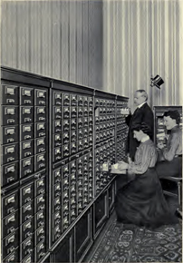

BOOK AND SOFTWARE REVIEWS
Krajewski, Markus Paper machines: about cards & catalogs, 1548-1928. Cambridge, MA: The MIT Press, 2011. vi, 215 p. ISBN 978-0-262-01589-9. $30.00/£20.95
I do not recall any previous work on the history of card indexes, so Krajewski's book fills a real gap in the literature. In the past there were books about the making of card catalogues and, as the author points out, manufacturers' catalogues for all kinds of card indexes abounded in the glory days of the device, but, as far as I am aware, this is the first (and excellent) attempt to explore how the card index came to be and how it virtually conquered the world of work before the invention of the computer.
Indeed, it is the author's aim:
to map these three basic logical components of every computer [set out by Alan Turing as, "(1) a (theoretically infinite) partitioned paper tape, (2) a writing and reading head, and (3) an exact procedure for the writing and reading head to move over the paper segments.] onto the card catalog as a "paper machine" analyzing its data processing and interfaces that may justify the claim, [in an advertisement in 1929 for the Fortschritt company] "Card catalogs can do anything".
Who actually invented the card catalogue is probably lost in the mists of time, but Krajewski points out that Konrad Gessner described cutting up sheets of paper to create readily arranged items of information in 1548, the start date in the title of the book. Whoever was the inventor, it was clearly a brilliantly innovative idea, bringing to scholarship a device that has been used ever since, and which continues even today among those for whom the computer does not offer the same degree of convenience as the pack of 5"x3" index cards. Indeed, analogues of the card index have been transferred into computer software - Apple's Hypercard system, long gone, was a notable example and Krajewski has himself produced a hypertextual card index package called Synapsen. It seems, then, that the index card model has a lot of life (real and virtual) left in it yet.
This is not at all surprising, since the notion of a single record for a piece of information of any kind, is very powerful. Once we decide that notes on things we are researching or reading, and records of persons or events, are best organized in such a way as to allow for arrangement and re-arrangement on different principles, the idea of the unitary record finds its place. Even modern database systems generally have the ability to present on screen an electronic analogue of the catalogue card, and the notion of 'fields' of data comes directly from book catalogues.
Krajewski continues the story through the 17th to the 19th centuries, with the invention of the standard card and the standard box to keep them in, with side glances to the paper slip organized into book form - a type that persisted in some libraries into the 20th century - the library of the British Museum being probably the prime example. I was sorry to find no mention of a very late development of this idea in the form of the Kalamazoo index, which was exactly this; individual slips of paper held in place by pegs in the spine and bound into a 'loose-leaf' binder. In fact the company and the product exist to the present!
Another omission that surprised me was in the failure to mention Kaiser's 'Systematic Indexing'. Kaiser was librarian of the Tariff Commission in London who developed a systematic method for indexing commercial and technical documents of all kinds. Kaiser's work is largely forgotten now, but he was decades ahead of his time in understanding the role of information in organizations and in using the available technology (the card catalogue) to present an effective organization of the subject analysis of documents. Although he does not use the term, his mode of indexing could be described as 'faceted'. Unfortunately someone I loaned my copy of the book to never returned it (if you are reading this, I'd still like to have it back, please!), but the book is available on the Web, and the historian of information management will find it very interesting. There are illustrations of card drawers, showing the locations of different levels of indexing using tabs, but the picture that appealed to me is this one - presumably the gentleman is Mr. Kaiser himself.
'Paper machines' is one of those books that you wonder why anyone would bother to write: after all, what's so fascinating about card catalogues? Then you pick it up and skim it and read the odd page and you realise that it is a book that needed to be written. You could even take this away for holiday reading over Christmas! Markus Krajewski has done the history of cataloguing and the history of information management a considerable service: I recommend it highly.